VirtualBox 完全指南
VirtualBox 是何方神圣
下面来看官方是怎么介绍的 (有改动):
VirtualBox 是一个同时适用于家庭和企业生产的强有力的 x86 平台虚拟化产品. 功能丰富, 性能优越的 VirtualBox 不仅适仅对于企业用户, 它也是唯一一个可以作为自由软件的专业级解决方案, 开源版本主要使用 GPL v2 许可证.
目前, VirtualBox可以在 Windows, Linux, Macintosh, Solaris 主操作系统中运行, 并支持大量来宾操作系统包括但不限于 Windows (NT 4.0, 2000, XP, Server 2003, Vista, Windows 7, Windows 8, Windows 10, Windows 11), DOS/Windows 3.x, Linux (2.4, 2.6, 3.x, 4.x 和 5.x), Solaris and OpenSolaris, OS/2, and OpenBSD.
VirtualBox 开发进程活跃并且发布新版本频率快, 通常会添加一系列新功能, 支持更多的来宾操作系统和可以运行的平台. VirtualBox 是由一家专门的公司支持的社区努力的成果: Oracle 在确保产品总是符合专业质量标准的同时鼓励每一个人贡献自己的代码.
开始使用 VirtualBox
入门教程
1. 准备必要文件
- VirtualBox 安装程序
点击进入 官网的下载页面, 如图:
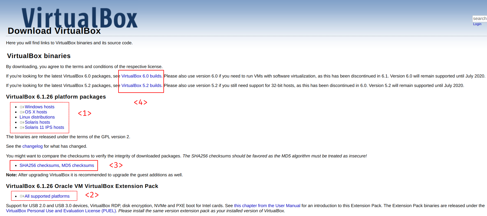
- <1> 下载 VirtualBox 安装程序, 根据你自己正在用的系统选择. 如果你是 Windows 用户, 选择 Windows 版本, 如果你是 苹果 用户, 选择 mac OS X 版本.
- <2> 下载 功能拓展包, 只有一个, 是 全平台 通用的.
- <3> 可选查看所有文件的校验和, 并 校验 下载的文件, 推荐使用 SHA256 算法.
- <4> 这些是旧版本的 VirtualBox 下载链接. 如果你需要使用 新版本 弃用的功能, 可以考虑下载旧版本的 VirtualBox. Linux 用户请注意, 如果你使用较新的 Linux 内核, 旧版本的 VirtualBox 可能完全无法正常使用.
- 准备光盘映像
2. 安装 VirtualBox
3. VirtualBox 用户界面
- 应用程序主窗口
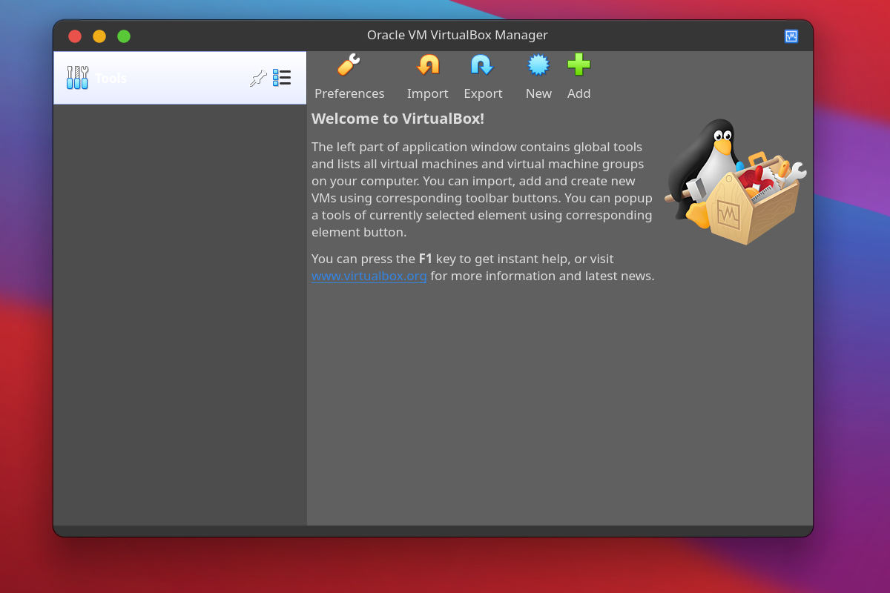 - 这是菜单,位置可能不一样
4. 安装功能拓展包
- 打开全局设置
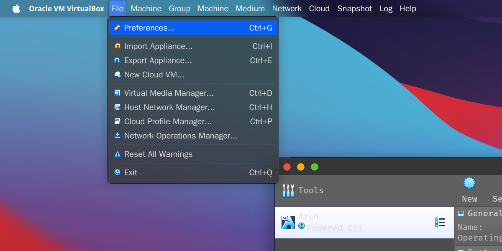 - 选择你的拓展包所在位置,点击安装
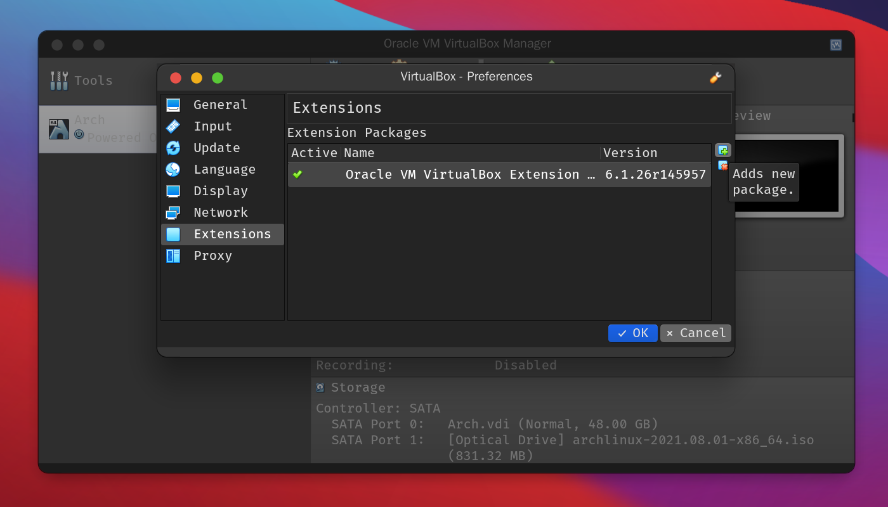
5. 创建虚拟机
以 ArchLinux 为例, 这里带你用最快速度进行一些基本配置:
- 点击 ‘Add’ 按钮开始一个新建向导, 点击 专家模式, 给虚拟机取个名字, 分配 合适的内存大小, 然后下一步.
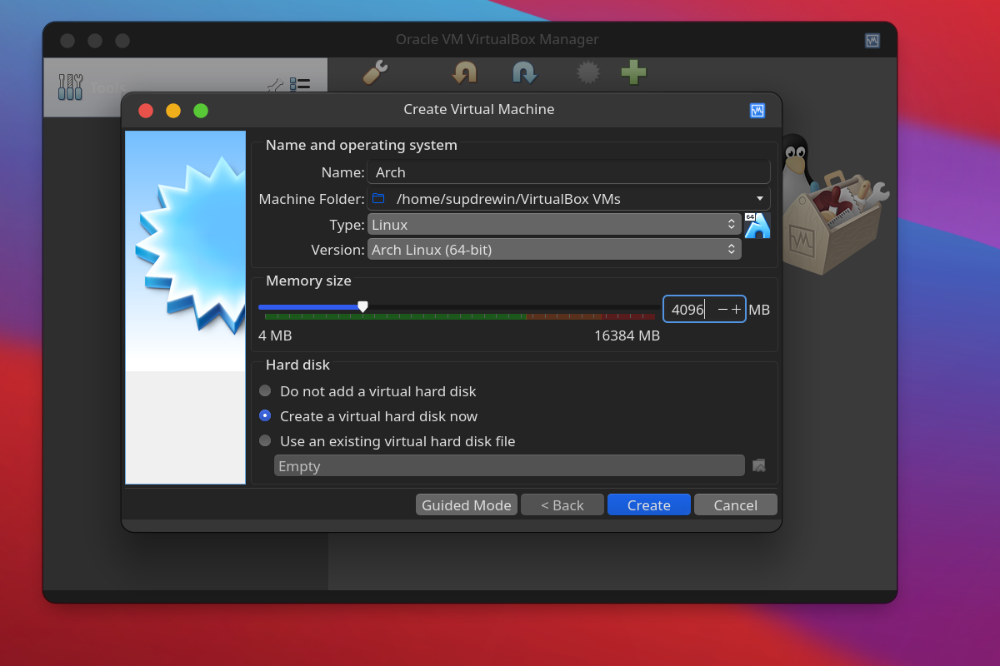 - 创建虚拟磁盘, 分配储存空间大小, 默认是动态分配, 所以 尽量多分一些.
格式 使用默认, 性能是最好的, 下一步.
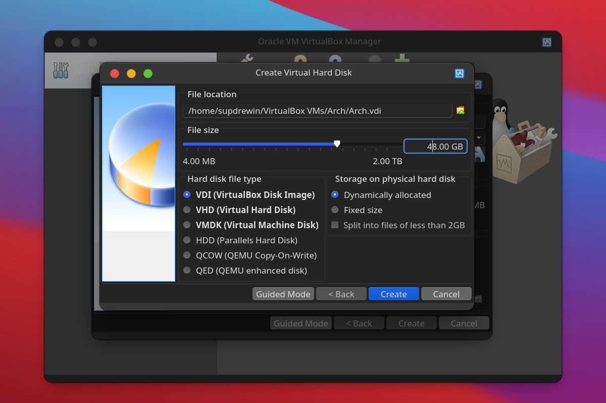
6. 进行基本配置
- 调整处理器数量, 分配一个 完整的核心 即可, 打开 PAE.
如果你的是较新的 锐龙 处理器, 下面的 嵌套虚拟化 应该是可以点亮的, 不过注意, 这是一项实验性功能, 如果此选项被禁用, 头铁的兄弟可以使用 此命令 强制打开.
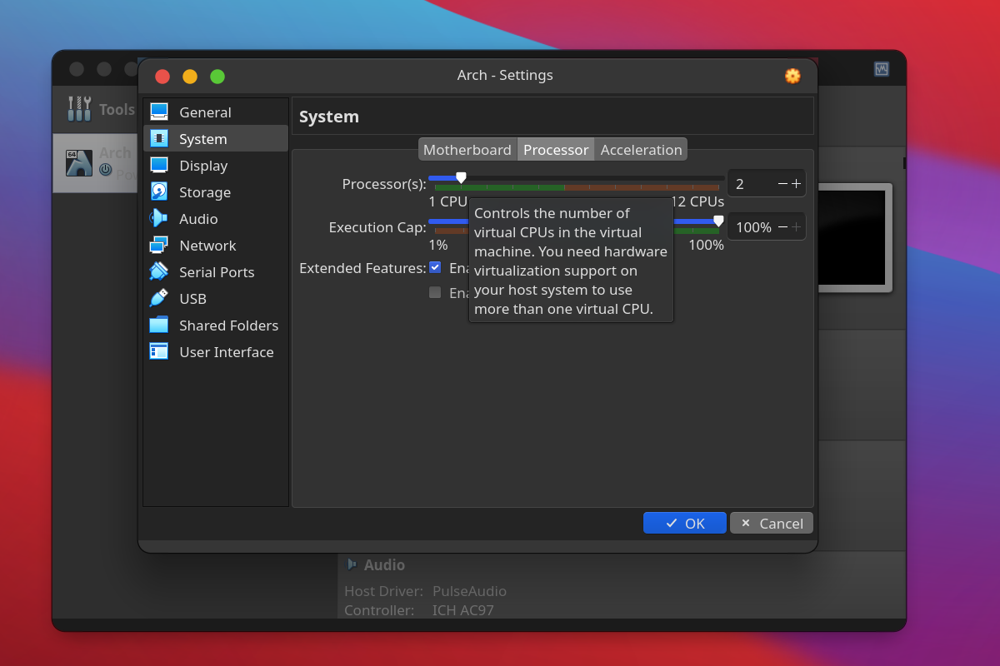 - 接下来是显示相关的配置, 可以开启 3D 加速, 显存尽可能拉大.
VirtualBox 支持的最大视频内存为 256 MB, 由于 VBoxVGA 和 VMSVGA 默认 128 MB 上限, 头铁的兄弟可以使用 此命令 将视频内存拉到最大.
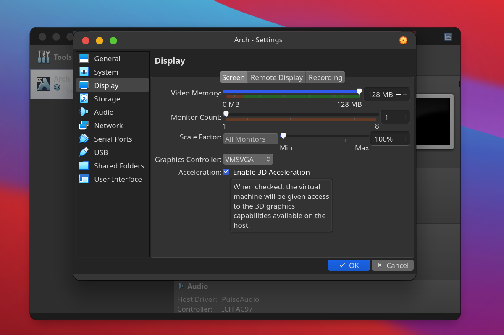 - 储存控制器一般选择 SATA, 也可以选 NVMe, 如有 IDE, 请移除该控制器, 并增加 SATA 通道的最大连接数.
如果 控制器下没有光驱, 点击’Controller: SATA’上的按添加光驱, 选择你现有的光盘映像, 也可以先留空.
如果你使用的是固态硬盘, 可以在对应虚拟磁盘下勾选 固态驱动器, 为达到最佳效果, 请同时勾选控制器下的 使用主机读写缓存.
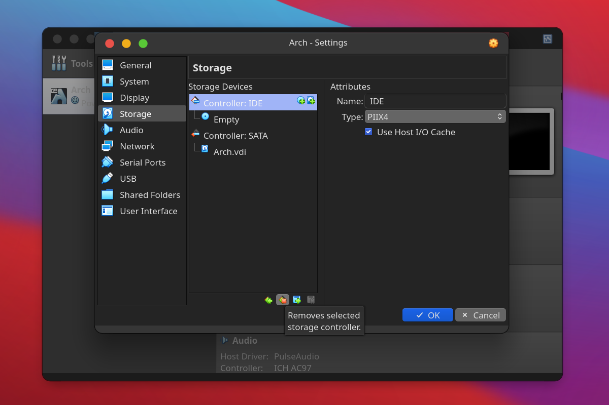
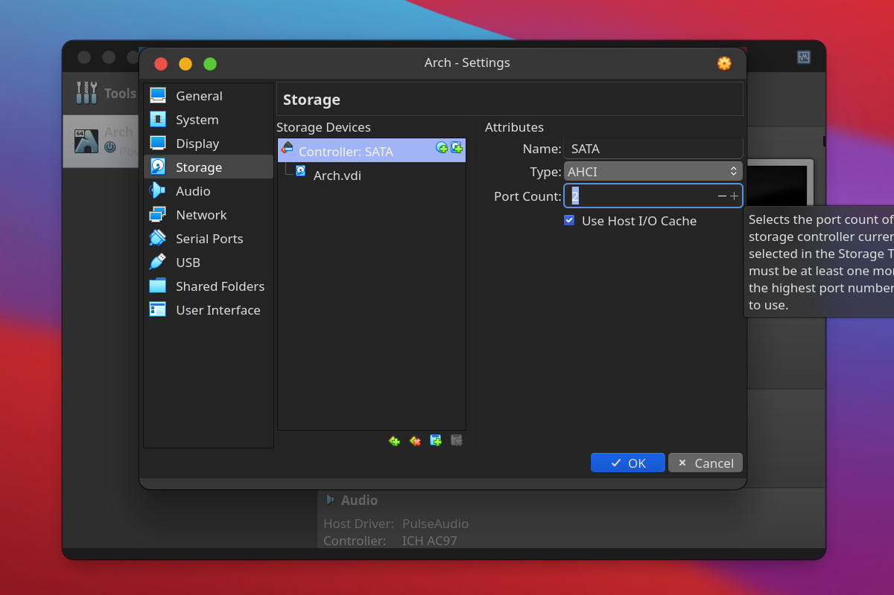
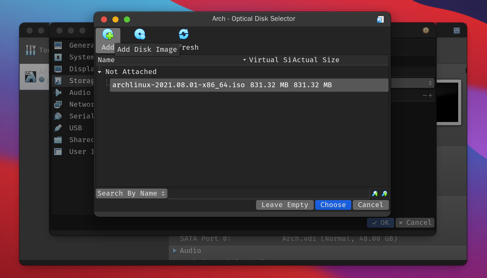
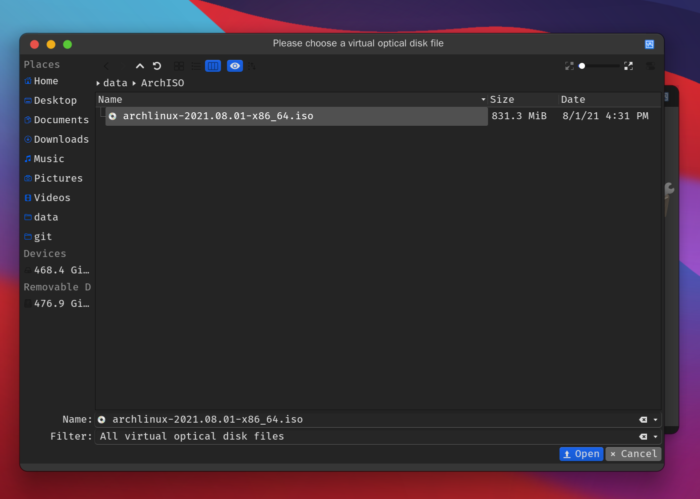
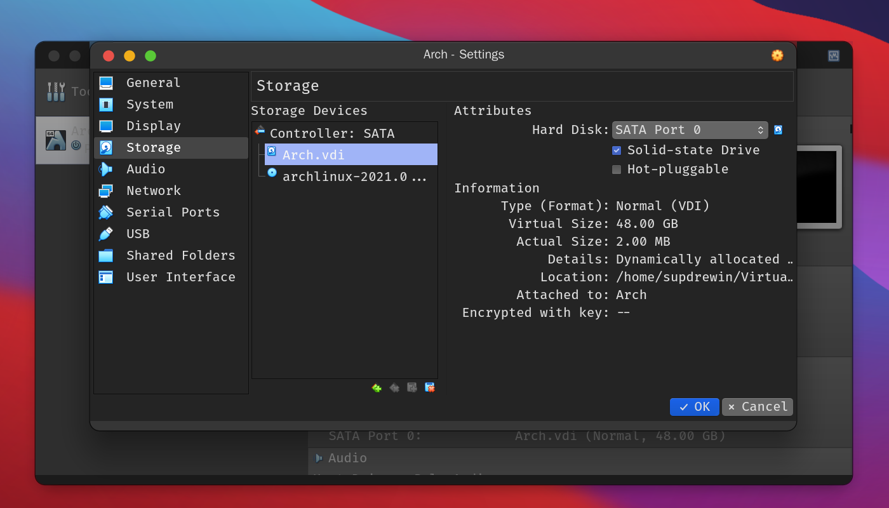 - 后来的配置暂时不讲, 默认即可.
7. 一切准备就绪, 那么开始吧!
- 调整完配置后启动:
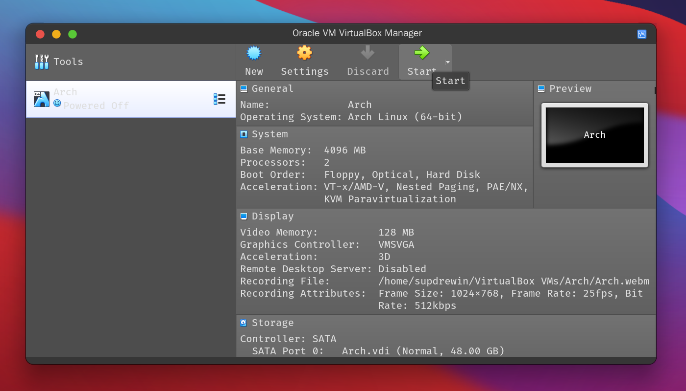 - 开始安装系统:
8. 安装增强功能
- Debian 和 ArchLinux 等发行版的包管理中已有 相关的包.
但是建议使用虚拟机菜单上的 安装增强功能 安装, 具体原因暂不解释. - 以未安装桌面环境的 ArchLinux 为例:
- 点击虚拟机菜单中的 安装增强功能
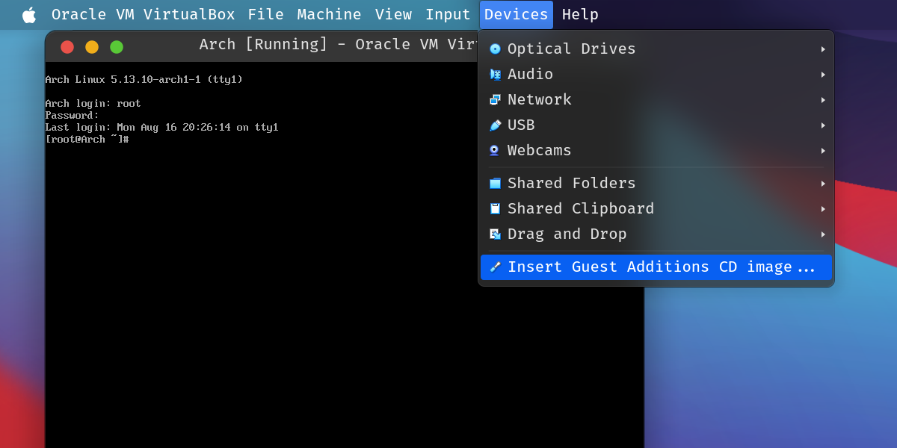 - 在虚拟机中 挂载 上一步插入的光盘映像到随意一个空目录下, 请忽略警告.
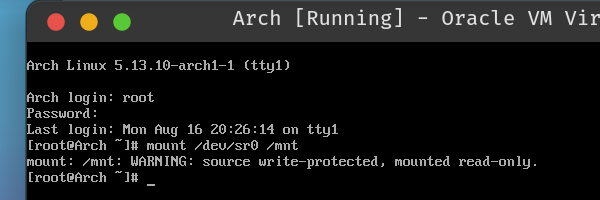 - 切换到挂载点, 开始 build. 如出现依赖问题, 请安装它提示的包. 一般 ArchLinux 安装 base-devel 包组即可.
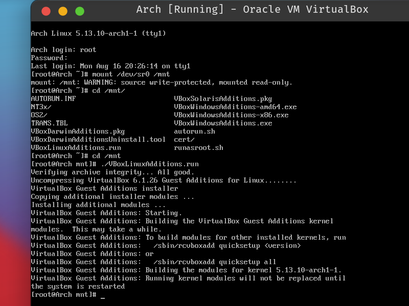 - 重启 完成安装.
- 点击虚拟机菜单中的 安装增强功能
高级用户教程
- 暂时参考 用户手册, 作者忙.
关于实例
为什么选 Linux
点击阅读 什么是 Linux
为什么选 ArchLinux
Arch 原则: 简洁, 现代, 实用主义, 以用户为中心.
关于安装 Windows
如果你有 Windows 安装镜像, 并且觉得 Windows 更适合你, 请跳转 此处.